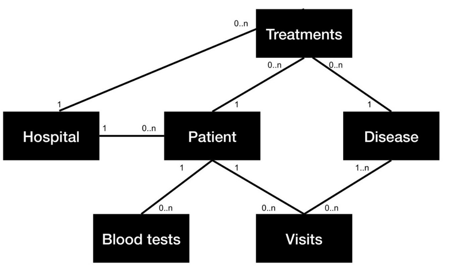
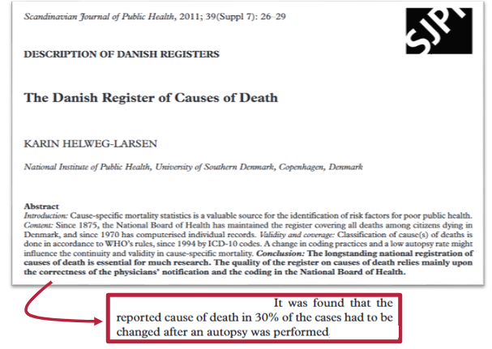

All about the data
Introduction to dynamic risk prediction
Data collection and - management are crucial and often the most challenging part of creating a predictive model. There are usually some obstacles in getting the data, which can take time and effort. There can be problems to meet expectation about the data if it contains a lot of missing values, or the data format is different. There can become issues when multiple datasets are gathered as similar variables can have different measures, names are different, different periods (some may collect their data containing time of the day, others may only state what day it is collected), etc. Many of these issues can be addressed in data management. However, some tradeoffs are needed to make the data work in practice. These concepts will be covered in this section of the course where the main topics regarding data management is:
- The motivation
- Data sources and biases
- Data management
- Exercises
Data sources and biases
Data management does not only consist of handling missing values, transforming data, etc. Data sources, data collection, and managing data biases are also significant parts of data management and hence modeling as a whole. In this section of the course, there will be a introduction to data collection and the potential biases with regard to:
- Data sources
- Biases and known limitations
- Coding/Classifications
- FAIR data principles
- Introduction to databases and REDCap
- Data structure for collection
The difference between these types of studies lies in the timing and control. First, we want to be able to understand existing data and how to work with the data we are collecting. Next, will the data be set in a frameworks that allow for better research designs while ensuring solid data quality.
Data vs Metadata vs Annotations
When working with data management, one should be able to differentiate between data, metadata, and annotations. Data is the actual subject of interest as it is the raw information which is gathered and which can provide valuable insight. Most people know about data, but metadata and annotations are also critical to make vast amounts of data understandable and usable.
These distinctions are important for the dynamic medicine prediction as the interplay are what gets most out of the data. There are the raw data, where we need some information about the data to work with it (metadata) and the annotations provides more intuition about the meaning of the ranges in the data.
Metadata can be seen as information about the data. An example of metadata could be related to blood samples that have been gathered:
| Measurement | Result |
|---|---|
| Systolic Pressure | 120 mmHg |
| Diastolic Pressure | 80 mmHg |
This data could have some additional information explaining the circumstances and gathering of the data:
| Metadata |
|---|
| Patient ID: 42421010 |
| Test Date: March 10, 2025 |
| Collection Time: 8:30 AM |
| Ordering Physician: Dr. House |
| Laboratory: Princeton-Plainsboro Teaching Hospital |
Annotations are like providing data with labels. They can be helpful for data management and modeling to understand the values of the data. With collaborations from healthcare staff and data collectors, clinicians add extra columns to the data, providing a label which categorizes the data to make it easier to understand for non-experts and models. An example of this could be:
| Measurement | Result | Annotation |
|---|---|---|
| Systolic Pressure | 110 mmHg | Normal range (90-120 mmHg) |
| Diastolic Pressure | 70 mmHg | Normal range (less than 80 mmHg) |
More about the blood pressure table can be found here
As can be seen, annotations are a kind of footnote to provide an overview of the meaning behind the values which are displayed in the data. With these central definitions explained, the next step is to understand who provides the data we are interested in when building dynamic prediction models for healthcare applications.
Data Providers
Data providers are the data holders of certain data. As developers of dynamic prediction models for healthcare applications, we are interested in data sources who can supply health-related data. As we are located in Denmark and our application is built on Danish patients, the data sources will be Danish. A few examples of some of the major holders of health data in Denmark are:
The Danish Health Data Authority is one of the most comprehensive data holders within health data in Denmark. The SDS have a wide range of registries, as:
- Register of causes of death
- THe National Patient Register (diagnoses, procedures…)
- Prescription register
- Pathology register
- MiBA database (with COVID data)
- THe Clinical Laboratory Information Register
- Many more
In the same vein as The danish data authority are there also institutions as:
The Danish Healthcare Quality Institute
Which is a organisation who collaborates across the entire healthcare system in Denmark and who have their professional focus areas: 1) Clinical guidelines, 2) Evaluations and, 3) Clinical quality registries. There is a wide ranges of health databases, whereas there are more than 40 Quality databases for cancers.
In the case of additional data is needed about the patietns, like their social background, education, etc. The most comprehensive and data rich provider in Denmark are:
It is not strictly reserved for healthcare, but is heavily revolving about society, workforce, education, culture, energy, etc. The organisation have existed for almost 200 years so the data horizon in terms of time goes way back.
In terms relevant register for dynamic risk prediction within health are there are couple frequently used registers:
- Civil status register
- Income register
- Social benefit register
- Education register
- Many more
However, as there are many official places to find such data, there are also other alternative sources, like:
- Your own collected data
- Local databases
- etc.
Before we decide on which data source we want to use for our predictive model, we should be aware of the potential biases and limitations, which is what the next section will cover in depth.
Bias and Limitations
The Danish National Patient Registry (DNPR), which is also referred to as Patient Administration Systems, is a centralized registry for patients who have been in contact with hospitals. The DNPR captures vast patient information but primarily focuses on those accessing hospital care. This results in a phenomenon called informed presence bias. It means that people who go to the hospital may not represent the general population. In medical research based on DNPR, this creates a presence bias because there are only observations with some illness in the dataset, which gives a higher presence of illness in the data analysis for the people who encounter the hospital. For a more in-depth explanation, please consider reading Goldstein, et al. 2016.
Level of expertice for clinicians: Another area for improvement in working with health data is consistency in some medical areas, as there can be a large gap in experience among the doctors doing the examination. This affects the quality as more experienced doctors have a higher probability of giving the correct diagnosis while also offering the most appropriate treatment, compared to doctors with less experience.
Prescription and consumption considerations: When considering the administration and consumption of medication, there is a gap between prescription, purchase, and actual consumption. There is no certainty that a patient consumes the medicine they are prescribed, and if they buy their medicine, it is difficult to know if they take it and if they are truthful about their medicine intake. Therefore, relying on prescription data to indicate a patient’s health condition is challenging and has to be considered when deploying a predictive model. Additionally, many drugs have off-label uses, meaning they are prescribed for conditions other than what they were originally approved for. This makes interpreting drug prescription data complex and can create noise for a model.
Besides the biases already discussed, there is a long list of biases to consider when conducting research. It is beyond the scope of this course to cover the full list, but here are a few important biases to be aware of:
| Type of bias | Description |
|---|---|
| Sampling bias | When the group chosen for a study does not accurately represent the broader population, leading to skewed results |
| Susceptibility bias | When certain groups are more prone to a particular outcome, due to some other external factors |
| Confirmation bias | Cognitive bias where researchers might unintentionally seek out or interpret data in ways that affirm their existing beliefs or hypotheses |
| Attrition bias | Systematic dropout from long-term studies which over time will create class imbalance |
| Volunteer bias | When the group of people who volunteer for a study do not represent the general population |
For more information about biases, please check out this comprehensive list about biases in research from University of Oxford.
If the data does contain signs of bias or seems strange, contact the individuals who are involved in the data collection. This could be the secretaries or clinicians, where experience is a crucial factor. Communication is the most important measure for ensuring data quality and mutual understanding, which ultimately is an important measure for the quality of the predictive model.
Retrospective studies: coding and classification
DROPPED: I don’t think it makes sense and it becomes to narrow for the course.
Given the idea of “base content around the exercises”, then the coding does not live up to that imo.
Prospective Studies: FAIR Data Principles
As the amount of data produced in the world keeps increasing, there is a need to make sure data can be found, accessed, is interoperable and can be reused. Having principles for good practice for the data, the metadata, and the infrastructure is an important matter in navigating the vast amount of data available, both when working with datasets separately and in merging data.
In 2016, the FAIR principles were introduced in the famous journal Nature, and it was a successful attempt to address the challenges of the vast amount of data. FAIR data principles provide a guide on how to navigate this data while optimizing the usage of the data.
The FAIR principles is an acronym for:
- Findable: Information about data and the metadata should be public and referenced
- Accessible: Data should be possible to access
- Interoperable: Use standardized data formats
- Reusable: Through extensive documentation make data reusable
FAIR data principles have been broadly adopted, while also being part of international, national, and local strategies for data management. Examples of initiatives utilizing FAIR data principles:
- National strategi for data management baseret på FAIR-principper
- Aalborg University (AAU) FAIR strategy
- The Beacon Network
- Genomic Data Commons (GDC) Data Portal
- European Genome-Phenome Archive (EGA)
For more information on FAIR principles, see GO FAIR.
However, while FAIR data principles have a significant impact on the quality and accessibility of data, there are some limitations which have to be taken into consideration. The legal aspects of data sharing are complex, and this may provide boundaries on the level of details which can be shared while also limiting the access to data further. Another significant limitation is the amount of work necessary to create the comprehensive documentation needed to live up to the FAIR data principles. Also, there might be a gap in the technical skill level of people who want to use FAIR, which can mean that some do not meet the requirements of the FAIR principles.
So there have been introduced some theoretical concepts to be aware of and principles for gathering, documenting, and making the most of the data. In the next section, some concrete tools for storing data will be introduced.
PROSPECTIVE STUDIES: Relational Databases and REDCap
Databases are digital platforms to store the data that will be used for the model. Often when doing certain analyses, a dataset is used, but this dataset is probably not enough to make serious modeling. When dealing with multiple datasets, it becomes more handy to store them in one place and to draw the necessary data when needed. This is where the database comes in.
The database can hold multiple datasets, which are called tables in database terms. These tables can be customized, merged, filtered, etc. as the data are pulled into the software where the analysis is made. To perform these data management operations for the database, one has to use Structured Query Language (SQL) which is a way to communicate and extract the desired data.
A simple example of an SQL query would be if we wanted a table consisting of patients who are between 18 and 100 years old, which means there would be a age variable to filter on. We want all the columns of the table, so we use * and we want the table called TUMOUR_DATA. So we write the query:
SELECT *
FROM TUMOUR_DATA
WHERE age BETWEEN 18 AND 100;There are different types of databases, and the choice of database is based on the use case and preference. A popular database type is the relational database which is a database consisting of tabular datasets (tables) where there are connections among the tables, so every table can be connected one way or another.

Relational databases are particularly valuable for dynamic risk prediction modeling as they allow researchers to efficiently query specific patient populations, track changes over time, and integrate diverse data sources. For instance, when developing a risk model for hospital readmission, a researcher could query patients with specific diagnoses, medication histories, and demographic characteristics all at once, rather than manually combining separate datasets.
To learn more about relational databases and other databases, please click here.
There are also different types of relational database management software solutions, where Postgres is a popular free solution, Oracle is more of a corporate software solution, and SQLite is a rather lightweight free solution, etc. These software solutions are beyond the scope of this course. To learn more about these software options, please read about them here.
Introduction to REDCap
Data collection tools play a crucial role in clinical research as they are the foundation for the accuracy and utility of gathered information. Of these, REDCap remains one of the preferred tools, as REDCap is custom-made to fit the unique characteristics of clinical data.
The purpose of REDCap is to ease collecting and managing clinical data with standard quality standards. REDCap have a range of tools which ease the process of manageging clinical data while also providing high security for handling the data with REDCap. Some of these tools are:
These tools makes it easy to work with clinical data compared to not using REDCap as:
- REDCap have a simple interface
- REDCap can store sensitive information
- REDCap is widely adopted
However, like all tools, REDCap is not without its limitations, as it does not fully embrace of relational data. This can be a limitation in clinical research, where data points often have complex relationships.
For a practical implementation of REDCap and the FAIR data principals, check out this research project about implementing a data infrastructure for precision oncology projects leveraging REDCap
In the this section, there was a comprehensive introduction to some of the considerations needed to work with data before and after pulling the data from a source. There was provided an introduction to some of the sources and some of the biases within the data collection. Now, the data is collected in its raw form and it has to be prepared for the actual modeling. This will be addressed in next major topic of this section.
Data Management
In this subsection of the course, there will be a practical approach to the data management aspect. This part is critical as data management has a significant influence on the modeling.
There is a saying of “Garbage in, garbage out”, which is a well-known slogan in data science and which emphasizes the importance of having clean data. This subsection will cover the challenges of data, data representation, data bundling, splitting data, missing data and feature engineering.
Starting Point
Returning to the example of predicting when to provide SACT treatment of palliative cancer patients, in order to most efficiently build model applications, it is wise to follow a well-established framework. An advanced example of such framework can be found here: Tomašev et al. (2021) Use of deep learning to develop continuous-risk models for adverse event prediction from electronic health records. This is a great example of an end-to-end dynamic prediction model.
Let us consider how to design such framework for our SACT prediction model:
| Setting | 30-day mortality example |
|---|---|
| A clinically relevant problem is identified | Can it be predicted which patients with advanced cancer die within 30 days? |
| It has been decided how the outcome will be evaluated | Date of death (of any cause) extracted from the CPR register |
| Inclusion and exclusion criteria are set (OBS: It needs to be generalizable to a prospective setting, criteria assessable from the point where model inference begins) | Include patients in contact with the Department of Oncology, who received SACT for cancer or were diagnosed with cancer |
| Prediction time points are defined | Every registered contact the patient has with Department of Oncology |
| Potential predictors identified | BMI, diagnoses, biomarkers, treatment data, surgery, etc. |
So now there is established a framework which is the design used for the study and which provides a solid overview of what the study tries to achieve and how the study will achieve it.
But a strategy needs to consider the potential issues with the data and how to account for that, so the next section will cover some potential issue and some countermeasure.
Challenges with data
After data has been received and loaded into the computer of the researcher, the first thing to identify is the flaws of the dataset.
Real world datasets is rarely cleaned and ready to be inputted in a pipeline. Therefor, it becomes crucial for the data management to understand the flaws of the dataset as it the foundation of the data management strategy to be aware of the weaknesses of the dataset.
Missing data
As the data collected for the predictive modelling is collected, it may visible that some columns have more values than other and this is the first sign that there are missing values.
Missing values (often referred to as Not-A-Number (nan)) are often present in a dataset and they do often occur in data and the amount of missing data does often increase as the complexity of the dataset increases. Which should be understood as the amount of columns, rows, registries the data is pulled from and the data types. Missing data are often present as empty cells of which the word ‘nan’:
Blood Pressure Table with Empty Cells
| Systolic (mmHg) | Diastolic (mmHg) |
|---|---|
| 78 | |
| 142 | |
| 118 | 75 |
| 128 | 82 |
Blood Pressure Table with “nan” Values
| Systolic (mmHg) | Diastolic (mmHg) |
|---|---|
| nan | 78 |
| 142 | nan |
| 118 | 75 |
| 128 | 82 |
Missing data should not only be seen as a negative feature of the dataset. Missing data can also contain some information which can be interpreted in a analysis or model.
However, missing data cannot be ignored as multiple models need the researchers to make decisions about the missing data, as the models simply cannot accept datasets with missing data. To handle missing data can many strategies be used, such as:
- Deletion: Remove rows or columns with missing values
- Mean/Median/Mode Imputation: Replace missing values with the average, median, or most frequent value.
- Constant Value Imputation: Fill missing values with a specific constant (like zero or a designated “missing” value).
- Predictive Modeling: Use machine learning algorithms to predict missing values based on other features.
- Multiple Imputation: Generate multiple complete datasets with different plausible values for the missing data.
More advanced strategies can also be applied:
- Multivariate imputation by chained equations (MICE): This is an iterative approach that models each variable with missing values as a function of the other variables and imputes the missing values based on these models.
- Gaussian processes: These are probabilistic models that can be used to predict missing values based on the observed data, also providing a measure of uncertainty for the imputed values.
- Generative adversarial networks (GANs): GANs are a type of deep learning model that can learn the underlying data distribution and generate plausible values for missing data points.
These suggestions can be found in the paper mentioned in the beginning of this subsection, Tomašev et al. (2021).
Irregurlarly sampling
As addressed in the motivation about dynamic modelling, are the healthcare sector a huge source of irregularly sampling, as the data depends on health and people. Health and people are two dynamic factors as sickness can develop in many ways, whereas people are hard to predict as the ideal behavior and the real behavior is not the same.
Due to all the uncertainty regarding health and people, there is no regular pattern in contact with the hospitals, therefor the need for dynamic models.
these irregularities is not entirely an issue, but the distance between events may also hold valuable information.
In order to structure irregularly samples, there can be employeed different strategies like:
- Resampling the data into uniform intervals.
- Aggregating the data into uniform chunks.
- Using models which can handle these irregularities.
The basic idea is to gather all the small pieces into fewer larger pieces which can be standardized as input for the model.
Data quality
When working with registries data, it is important to consider that it is most often people who write journals and fill in the values manually. In healthcare there are different actors like doctors, secretaries, nurses, etc. These people work at any hour of the day and they have different degrees of expertise. Additionally, as time progress, new diagnosis are added, others are edited, treatments changes, etc. With all these considerations, there is a high probability that the data quality may be influenced by these factors.
To sum up the data quality, the researcher whom want to build a model most be aware of:
- Data entry errors
- Inconsistencies in the data
- Missing data
- Outliers (Due to mistakes)
- Biases
For a analyst, it may be different to distinguish good and poor data quality, which makes it important to work close with clinicians and use their expertise to understand the data.
Data collected for other purpose than modelling
The data collection have been made on the behalf of administration and to journal a patient, if we look at patient registry. These registries was not created for the purpose of storing data for predictive modelling, as for many other data sources. This is why the data management part is so crucial and take up so much time.
This also means that relevant predictors may be missing and potential hidden biases can cause trouble for the modelling.
So now, there are a lot of pitfalls being presented already and this leads to the natural question of what to do about it?
Check your data
To make sure we get a good output of the model, there needs to be a good input. This can be found by taking several measures:
Talk to personal
Talking to the experts and the people at the front is significant for the preprocessing of the data. To understand how the clinicians collect the data, the dilemmas regarding the data collection, understand potential flaws or why some data seem unusual.
Make summary statistics
Making summary statistics can offer a lot of information regarding the dataset where are working with. As analyst there are some expectations to the data and the shape oif the data. When looking at the summary, it becomes easy to compare the expectation - with the reality of the data.
Some of the things that becomes present when looking at the data is the degree of:
- Missing data
- Outliers
- abnormally frequent values
- etc.
When there is a overview of these flaws, the next step is to make a data management strategy which take these considerations into account.
Pattern or random missing?
Missing data is a tricky problem and before any imputation, removal or similar is considered, should the missing values be studied for patterns. Does one missing data keep occur in the same intervals?
Often when addressing missing values, there are used three categories:
Missing completely at random:
The data is missing completely at random, meaning there is no relationship between the missing data and other values in the dataset.
Missing at random:
The data is missing due to a underlying systematic structure of the data. A example could be that a registry about depression may have surveys where a lot of the surveys have missing data. However, if the surveys are conditioned on the genders, it can be seen that there is a pattern of males not completing the survey compared to females.
Missing not at random:
The data have a pattern of the missing data, where it becomes visible that the missing data is connected to the observed data. Let us return to the registry over depression and look at those who have severe depression, those people have a high probability of not completing a survey.
These three categories of missing data was briefly introduced in this course. If more information is desired or details about the example case of the registry for depression, please read more here
Is the recording of the outcome good enough?
A analyst should be critical when picking a data source, as the quality of these sources can vary and there make incorrect input hence wrong predictions.
A example of such problem is the danish register of causes of death. A study showed that a significant amount of the causes of death was wrong:

What the researchers found was that there have been a rather unstructured approach to determining the causes of death which ultimately meant that 30% of the cases had the wrong cause of death after a autopsy was performed.
The lesson here is that a analyst may be cautious to choose the danish register of causes of death for a analysis and also to be critical of even well established data sources.
For more information about the case used as example in this subsection, please read the full paper of The Danish Register of Causes of Death
Data representation
To work with dynamic risk prediction and with the unstructured data healthcare data that arrives in irregular intervals, is time discretization a effective solution.
As patients come at varying timepoints during the day and they are through different parts of the healthcare, a analyst may consider to transform the data into something with a structured dataformat, which makes the prediction model process the data efficiently.
Choosing a standard range where data can be discretized into, would make help structuring the random data. It depends on the amount of data, but some ranges could be to look at hourly data, daily, weekly, etc. It all depends on the frequency of data. If there are plenty of datapoint every hour, the data should be in hourly format.
To increase the performance of the prediction model, it is better to have the data granularity to be as low as possible, to be able to present as many details as possible for the model, which makes the output more detailed as well. The choice of the discretization bundeling depends on the amount of data, the frequancies and the preprocessing of the data.

However, as a time chunk have been established, some patient may have multiple values within a parameter in the given time bundle. Let us pretend a patient is being followed a day of hospitalization where the blood pressure is measured multiple times. if the time is in 12 hours bundles, then the blood pressure values needs to be aggregated somehow. A good solution may be to take the average of these values. Another good solution may be to take the most recent measurement.


# Put it in the center somehow
It can be helpful for multiple models to only look back a short period of time for each prediction for some variables while other variables needs a window which goes further back in time. It is a question of subject, like blood measurement which do not needs to look as far back as a diagnosis (add more context here), the amount of data available and the models used. Some models like Recurrent Neural Networks, are better built for long sequences while linear models are better off with some shorter sequences. For When working with lookback windows and some values needs aggregation as described already, the options of aggregation depends on the datatype: Some aggregation options:
- For continuous values: count, median, mean, standard deviation, max/min/average difference between subsequent entries
- For categorical values: binary variable for present or not during lookback window
To make a decision regarding the aggregation of repeating values, the data analyst should get a overview of the statistical techniques to do this opration and base the decision on collaboration with relevant experts.
Another concept to be aware of is the possibility of Data Leaking which is when some information in the test data can be found in the training data. When building a prediction model, one would have a fraction of the dataset to train the model and a fraction of the data to be test the models performance. The model is trained on data it can see and it is tested on data it cannot see. The problem about data leaking is when some information of the unseen data is present in the seen data. A example of this could be a patient who get sick and then go to the hospital, where the person is registrered. This mean that can be a gab of hour to days between a person is getting sick till it is registered. A solution here is to choose a choice of the time bundles which account for this difference.
More information can be found on a paper, which have yet to be found
Splitting data - Holdout method
To get the best performing model, it needs to be a model which can be trained on some data and tested on some unseen data, without any significant difference in performance. This means that a data analyst cannot make a model on some data and set the model in production, as this would lead overfitting as the model would have great performance on the data it was trained on, but most likely not on the real data.
The splitting of the data vary, depending on the task. The most basic approach is to have a training set and validation set. The ratio between train and test is often 80/20 percentage of the data. This ratio can vary and there can be instances depending on the amount of data and the choice of the author.
The validation set is a pre test set as it is used for optimization of hyperparemeters. Many models have a range of hyperparameters to adjust when training the model to increase the performance. As models becomes more complex, the hyperparameter tuning is becoming more important for the model. To properly evaluate the hyperparameters the validation set is used to optimize the hyperparameters until some stopping criteria is meet. When the best performing hyperparameters are found within the given stopping criteria, the model is then evaluated on the test set. To sum the process, model is trained with the training data, optimized with the validation set and evaluated on the test set.
I other words, a held-out set will provide an unbiased estimate on how the model will perform in production. Multiple splits (multiple scenarios) will help to test the generalization of the model. These splits are also known as “folds” and the method used for testing these different splits of the data is know as “K fold cross validation”. In practice are a k=5 enough, but some suggest a k=10.
However, even if k-fold cross validation is a powerful technique, it can still lead to overfitting. As the models is repeatly trained on the data, the model starts to recordnize patterns of the training data. To overcome this challenge of potential overfitting another measuere can be used, which is the nested Cross-validation. The basic idea is that there is a additonal loop in the cross validation where there is a outer loop which is the same approach as a ordinary k-fold cross validation. But this time is a inner loop added to the individual folds, where there is a additional k-fold cross validation for each k of the other loop. The inner cross validation is used to find the best model in that particular part of the outer split and which will be tested on the testing set of the outer loop. Graphically it looks like this:

As only a subset of the dataset, one fold at a time, is evaluated with a additional k-fold cross validation, the risk of the models overfitting the data is greatly reduced.
Feature engineering
Feature engineering is a crusial step in the data management step, as it is the time where the data can be cleaned, where features can be selected, transformed into the best possible input and to help additional featueres based on the existing features to support the models understanding of the features scales or interactions.
One of the first to do when the data for the prediction model is secured is to identify useful features. The most efficient way to measure the importance of the features is to discuess with the clinicians as they are better suited to provide insight to what they think are important for the specific case. This is especially important as some predictors may demand a lot of work. The clinicians becomes essential for this matter to state if predictors are worth to keep and if so, what would the most appropriate strategy be to repair the predictor. This means that another important factor for choosing features is the Data quality of the features. Some features with low quality would be better to remove if there is not a expected gain from keeping the feature.
When the features is sorted and and it is time to work with the remaining features, there might be motivations to add more features based on the existing features. The reason is that some models need data to be in a certain way and other models can improve performance if there is some “helper” features to add additional information to the model. Another measure could be to make a binary or categorical value based on some continuous variables, to annotate of a value is low, normal or high. A example of this could be blood pressure
| BLOOD PRESSURE CATEGORY | SYSTOLIC mm Hg (upper number) | and/or | DIASTOLIC mm Hg (lower number) |
|---|---|---|---|
| NORMAL | LESS THAN 120 | and | LESS THAN 80 |
| ELEVATED | 120 - 129 | and | LESS THAN 80 |
| HIGH BLOOD PRESSURE STAGE 1 | 130 - 139 | or | 80 - 89 |
| HIGH BLOOD PRESSURE STAGE 2 | 140 OR HIGHER | or | 90 OR HIGHER |
| HYPERTENSIVE CRISIS (consult your doctor immediately) | HIGHER THAN 180 | and/or | HIGHER THAN 120 |
More about the table can be found here
Adding these annotation can help the model to better understand the implications of the ranges of a continuous variable.
Categorical can also cause problem, as there can be some categorical with few observations. These few observation can make it hard for the model to find any meaningful realations while also cause the model to overfit on these cases, so the model learns patterns related to these few observations, which could be random as there is not enough information to confirm a relation. Furthermore can there be some privacy issues as health data is sensitive data and the model cannot reveal anything about certain individuals. This is why it can be beneficial to collapse some of the categorice into fewer and larger ones. A example could be some type of cancer
Original Dataset: Patient Primary Symptoms
| Primary Symptom | Patient Count |
|---|---|
| Headache | 450 |
| Dry Cough | 280 |
| Fever | 150 |
| Skin rash | 15 |
| Body ache | 2 |
After Collapsing Infrequent Values
| Primary Symptom | Patient Count |
|---|---|
| Headache | 450 |
| Dry Cough | 280 |
| Fever | 150 |
| Other Symptoms | 17 |
The two tables fictionational and used to show how rare occuring event can be collapsed together.
Another approach to handle catorical values is to transform them into binary variables which represent each category in a variable. This is to provide the model with additonal information and it is a way for linear models to handle categorical variables, which they are normally unable to use as input if the categorice are nominal or represented as text. One hot encoding also helps in terms of the distance in categorical variables. A model may interprete a categorical value to have some type of ordering among the variables, but by splitting the categorize into seperate binary features, the model can handle the categorize more efficiently. A example could be a gender variable:
Before One-Hot Encoding
| Gender |
|---|
| Male |
| Female |
| Male |
| Female |
| Male |
After One-Hot Encoding
| Male | Female |
|---|---|
| 1 | 0 |
| 0 | 1 |
| 1 | 0 |
| 0 | 1 |
| 1 | 0 |
However, there are some consideration about how the dimensions of a dataset can grow rapidly and lead to consequnces like Curse of dimensionality. Despite this consideration, does One-Hot encoding remains as a popular and effective tool in the feature engineering toolbox.
Outliers is something whihc also calls for feature engineering. Some outliers are legit, but it can be expected that some other outliers are there by mistake. It could be a BMI of 200 or a age of 150. Some outliers may be legit, but it can be convient to leave them out of the model if they deviate much. This is obviously a case-by-base consideration. To find outliers it can be helpful to look at upper percentiles in the summary statistics and see if there is a unexpectated distance from the mean to upper percentiles and if the values seem to me a product of a mistake, the model would be better with the upper percentile cutted.
Feature scaling: The scaling of feature values are crucial for models performance. By scaling the features can make them contribute to the model more proportionally, as features can come in all sorts of unit sizes. Variables with larger ranges will have a heavier influence on the models. The scaling does also improve the convergence speed as the optimization space becomes more smooth compared to unscalled inputs. Some of the common scaling methods are:
- Normalization: Not sure here…. !!!!!!!!!!!!!!! HEIDI!!!!!!!!!!!!!!!
- Standardisation: Transform the data by subtracting the datapoint from the mean of the data and divide it with the standard deviation \[X_{new} = \frac{x_i - \mu}{\sigma}\]
- Min-max scaling: Rescales features to a range between 0 and 1, based on the minimum and maximum values of the dataset \[X_{new} = \frac{X - X_{min}}{X_{max} - X_{min}}\]
The choice between the scaling methods depends on the disrtibution of the data. If the data is normal distributed pick standardization and if the data is not normal distributed go with Min-max scaling.
Exercise
Data management
In this exercise you will prepare data for training and testing a dynamic prediction model. The data we will consider is described in PAD-introduction.html and the data files (baseline_date.csv, diag_data.csv, dict_data.csv, blood_data.csv, quest_data.csv, treat_data.csv, event.csv and vist_date.csv) – all found under Day 1/Workshop 1 on PhD Moodle.
This workshop focusses on preparing data for non-recurrent models, i.e., the goal is a dataset with one row per prediction time point with patient history aggregated into separate features. As your binary outcome you can for example choose 1-year mortality, but your are welcome to choose another outcome based on the events data set.
Go through the following steps:
- Load all the datasets and get acquainted with them, including reading the data description, making simple checks on the possible predictors (e.g., check for proportion of missing values). Consider translating diagnosis codes in diag_data to a more descriptive diagnosis code using the key in dict_data.
- Join the feature datasets variables (blood_data, diag_data, quest_data, and treat_data) and the visits data set (visit_date) on patient id and date to obtain a dataset with one row per unique date; as you only will have one observation per day this corresponds to bundling in 1-day time steps. Order data by patient id and date.
- Add baseline variables (in baseline_data) to the dataset (join by patient id).
- Determine which patients goes into the training, validation, calibration, and test split (using, e.g., 80% training, 5% validation, 5% calibration, and 10% test). You can either add a variable indicating which split each observation belongs to or split your data into the four pieces.
- Perform feature engineering, for example:
- Do we want to remove some predictors? (e.g., due to missingness or weird values)
- One-hot encoding of categorical predictors
- Construct feature for age at each time point
- How to handle missing values? Imputation*, presence variables, …?
- Cap and normalise numerical predictors**
- Summary variables (aggregating historical information)
- Filter your data to only keep rows related to prediction time points (=time of a visit) and use the dataset events to define your outcome for each time point and add to the dataset you just created.
If you use the mean or regression to impute variables, you should base this on the training set only The values you cap and the values you use to normalise should be based on the training set only
Please find your notebook and code here:
Solutions to the exercises can be found here:
Dynamic Risk Prediction Dynamic Risk Prediction Dynamic Risk Prediction Dynamic Risk Prediction